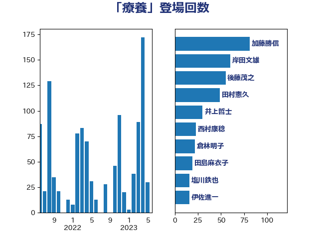

単語「療養」

| 加藤勝信 | 自由民主党 | 81 回 |
| 岸田文雄 | 自由民主党 | 60 回 |
| 後藤茂之 | 自由民主党 | 55 回 |
| 田村憲久 | 自由民主党 | 49 回 |
| 井上哲士 | 日本共産党 | 30 回 |
| 西村康稔 | 自由民主党 | 23 回 |
| 倉林明子 | 日本共産党 | 22 回 |
| 田島麻衣子 | 立憲民主党 | 19 回 |
| 塩川鉄也 | 日本共産党 | 16 回 |
| 伊佐進一 | 公明党 | 16 回 |
| 池下卓 | 日本維新の会 | 14 回 |
| 大島九州男 | れいわ新選組 | 14 回 |
| 宮本岳志 | 日本共産党 | 13 回 |
| 中島克仁 | 立憲民主党 | 12 回 |
| 田村智子 | 日本共産党 | 11 回 |
| 榛葉賀津也 | 国民民主党 | 10 回 |
| 天畠大輔 | れいわ新選組 | 10 回 |
| 窪田哲也 | 公明党 | 9 回 |
| 田中健 | 国民民主党 | 9 回 |
| 本田顕子 | 自由民主党 | 9 回 |
| 佐藤英道 | 公明党 | 9 回 |
| 阿部司 | 日本維新の会 | 8 回 |
| 森山浩行 | 立憲民主党 | 8 回 |
| 塩田博昭 | 公明党 | 8 回 |
| 古川康 | 自由民主党 | 8 回 |
| 梅村聡 | 日本維新の会 | 7 回 |
| 鰐淵洋子 | 公明党 | 6 回 |
| 阿部知子 | 立憲民主党 | 6 回 |
| 柚木道義 | 立憲民主党 | 6 回 |
| 川田龍平 | 立憲民主党 | 6 回 |
| 高橋千鶴子 | 日本共産党 | 5 回 |
| 菅義偉 | 自由民主党 | 5 回 |
| 畦元将吾 | 自由民主党 | 5 回 |
| 永岡桂子 | 自由民主党 | 5 回 |
| 打越さく良 | 立憲民主党 | 5 回 |
| 山際大志郎 | 自由民主党 | 5 回 |
| 長妻昭 | 立憲民主党 | 4 回 |
| 石田昌宏 | 自由民主党 | 4 回 |
| 田村まみ | 国民民主党 | 4 回 |
| 小西洋之 | 立憲民主党 | 4 回 |
| 三浦信祐 | 公明党 | 4 回 |
| こやり隆史 | 自由民主党 | 4 回 |
| 高階恵美子 | 自由民主党 | 3 回 |
| 青木愛 | 立憲民主党 | 3 回 |
| 野田佳彦 | 立憲民主党 | 3 回 |
| 石川大我 | 立憲民主党 | 3 回 |
| 石井苗子 | 日本維新の会 | 3 回 |
| 浅野哲 | 国民民主党 | 3 回 |
| 東徹 | 日本維新の会 | 3 回 |
| 末松信介 | 自由民主党 | 3 回 |
| 早稲田ゆき | 立憲民主党 | 3 回 |
| 山本博司 | 公明党 | 3 回 |
| 宮本徹 | 日本共産党 | 3 回 |
| 吉田統彦 | 立憲民主党 | 3 回 |
| 吉田久美子 | 公明党 | 3 回 |
| 友納理緒 | 自由民主党 | 3 回 |
| 佐藤啓 | 自由民主党 | 3 回 |
| 中野洋昌 | 公明党 | 3 回 |
| 高木かおり | 日本維新の会 | 2 回 |
| 馬場伸幸 | 日本維新の会 | 2 回 |
| 阿部弘樹 | 日本維新の会 | 2 回 |
| 長友慎治 | 国民民主党 | 2 回 |
| 若松謙維 | 公明党 | 2 回 |
| 芳賀道也 | 国民民主党 | 2 回 |
| 竹谷とし子 | 公明党 | 2 回 |
| 福島みずほ | 社会民主党 | 2 回 |
| 矢倉克夫 | 公明党 | 2 回 |
| 生稲晃子 | 自由民主党 | 2 回 |
| 牧山ひろえ | 立憲民主党 | 2 回 |
| 熊谷裕人 | 立憲民主党 | 2 回 |
| 漆間譲司 | 日本維新の会 | 2 回 |
| 深澤陽一 | 自由民主党 | 2 回 |
| 河西宏一 | 公明党 | 2 回 |
| 星北斗 | 自由民主党 | 2 回 |
| 斉藤鉄夫 | 公明党 | 2 回 |
| 山本香苗 | 公明党 | 2 回 |
| 山本太郎 | れいわ新選組 | 2 回 |
| 守島正 | 日本維新の会 | 2 回 |
| 吉田とも代 | 日本維新の会 | 2 回 |
| 古賀篤 | 自由民主党 | 2 回 |
| 伊藤孝江 | 公明党 | 2 回 |
| 仁木博文 | 無所属 | 2 回 |
| 井出庸生 | 自由民主党 | 2 回 |
| 一谷勇一郎 | 日本維新の会 | 2 回 |
| 高見康裕 | 自由民主党 | 1 回 |
| 高橋克法 | 自由民主党 | 1 回 |
| 高木真理 | 立憲民主党 | 1 回 |
| 青柳陽一郎 | 立憲民主党 | 1 回 |
| 阿達雅志 | 自由民主党 | 1 回 |
| 金村龍那 | 日本維新の会 | 1 回 |
| 金子恭之 | 自由民主党 | 1 回 |
| 野間健 | 立憲民主党 | 1 回 |
| 野田聖子 | 自由民主党 | 1 回 |
| 遠藤敬 | 日本維新の会 | 1 回 |
| 道下大樹 | 立憲民主党 | 1 回 |
| 足立康史 | 日本維新の会 | 1 回 |
| 赤木正幸 | 日本維新の会 | 1 回 |
| 谷田川元 | 立憲民主党 | 1 回 |
| 谷川とむ | 自由民主党 | 1 回 |
| 西田実仁 | 公明党 | 1 回 |
| 西岡秀子 | 国民民主党 | 1 回 |
| 蓮舫 | 立憲民主党 | 1 回 |
| 羽生田俊 | 自由民主党 | 1 回 |
| 福重隆浩 | 公明党 | 1 回 |
| 福島伸享 | 無所属 | 1 回 |
| 石垣のりこ | 立憲民主党 | 1 回 |
| 石井啓一 | 公明党 | 1 回 |
| 田村貴昭 | 日本共産党 | 1 回 |
| 玉木雄一郎 | 国民民主党 | 1 回 |
| 玄葉光一郎 | 立憲民主党 | 1 回 |
| 牧島かれん | 自由民主党 | 1 回 |
| 源馬謙太郎 | 立憲民主党 | 1 回 |
| 浦野靖人 | 日本維新の会 | 1 回 |
| 浜口誠 | 国民民主党 | 1 回 |
| 江田憲司 | 立憲民主党 | 1 回 |
| 比嘉奈津美 | 自由民主党 | 1 回 |
| 武井俊輔 | 自由民主党 | 1 回 |
| 櫻井充 | 自由民主党 | 1 回 |
| 横沢高徳 | 立憲民主党 | 1 回 |
| 根本幸典 | 自由民主党 | 1 回 |
| 枝野幸男 | 立憲民主党 | 1 回 |
| 松本洋平 | 自由民主党 | 1 回 |
| 杉本和巳 | 日本維新の会 | 1 回 |
| 杉尾秀哉 | 立憲民主党 | 1 回 |
| 志位和夫 | 日本共産党 | 1 回 |
| 川崎ひでと | 自由民主党 | 1 回 |
| 岸真紀子 | 立憲民主党 | 1 回 |
| 岩谷良平 | 日本維新の会 | 1 回 |
| 岡本あき子 | 立憲民主党 | 1 回 |
| 山田美樹 | 自由民主党 | 1 回 |
| 山本左近 | 自由民主党 | 1 回 |
| 山口那津男 | 公明党 | 1 回 |
| 山口壯 | 自由民主党 | 1 回 |
| 山下雄平 | 自由民主党 | 1 回 |
| 小野泰輔 | 日本維新の会 | 1 回 |
| 小川淳也 | 立憲民主党 | 1 回 |
| 宮路拓馬 | 自由民主党 | 1 回 |
| 堀場幸子 | 日本維新の会 | 1 回 |
| 原口一博 | 立憲民主党 | 1 回 |
| 佐々木紀 | 自由民主党 | 1 回 |
| 今枝宗一郎 | 自由民主党 | 1 回 |
| 井坂信彦 | 立憲民主党 | 1 回 |
| 中川貴元 | 自由民主党 | 1 回 |
| 三原じゅん子 | 自由民主党 | 1 回 |
| おおつき紅葉 | 立憲民主党 | 1 回 |